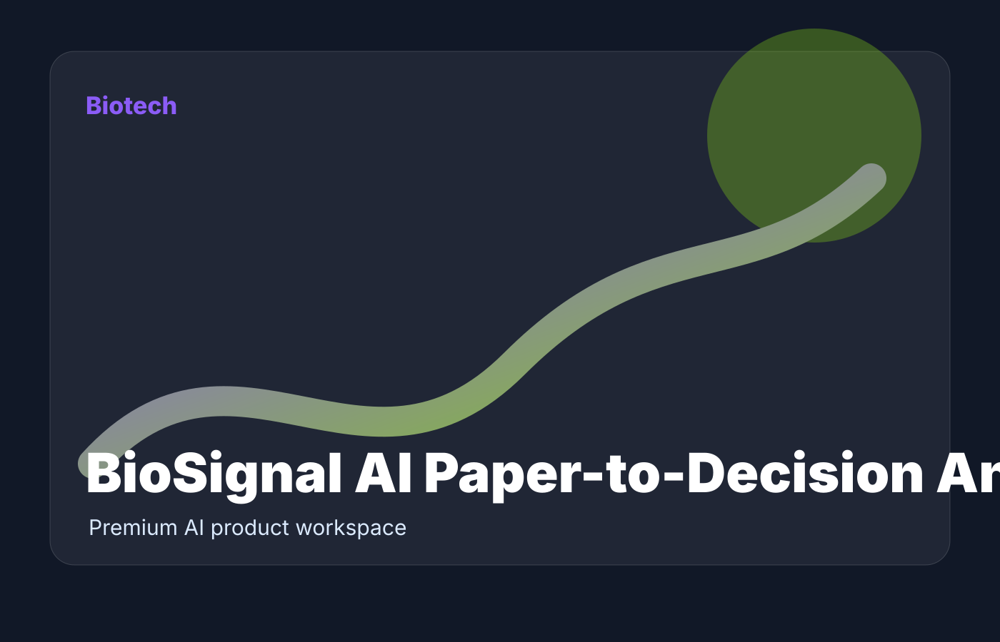

BioSignal AI
Paper-to-Decision Analyst
Load sample

Biotech diligence workspace
BioSignal AI Paper-to-Decision Analyst
$1,500/month diligence workspace
Premium workflow
A desktop-grade AI workspace for paper triage, translational risk review, and next-experiment planning.
94
quality score
5
workflow modules
$1.5k
price anchor
structured intake
quality scoring
risk review
executive summary
export-ready action plan
Study notes or abstract
Decision report